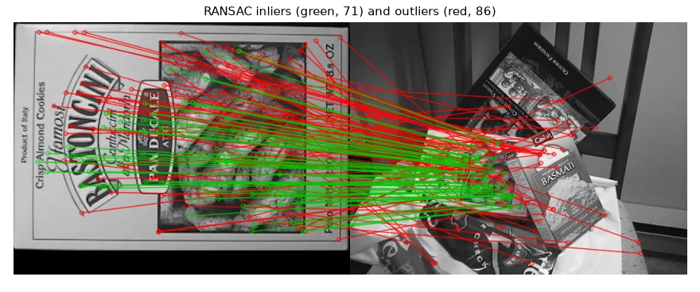
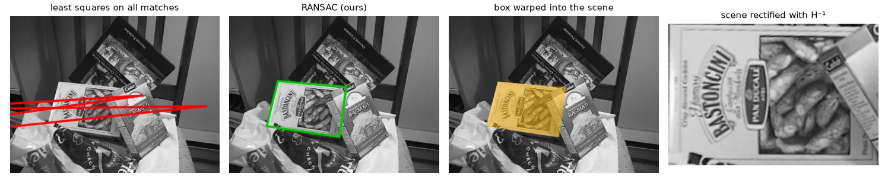

The problem#
From lesson 12 we have ~150 SIFT matches between a cookie box and a cluttered scene. Many are wrong. Since the box face is a plane, the correct matches are all related by one homography \(H\) (lesson 03): \(\mathbf{x}' \sim H \mathbf{x}\). We want \(H\) — and to know which matches agree with it.
The Direct Linear Transform#
Write \(H\) with rows \(\mathbf{h}_1^\top, \mathbf{h}_2^\top, \mathbf{h}_3^\top\). For one correspondence \((x, y) \to (u, v)\):
Each correspondence gives two linear equations in the 9 entries of \(\mathbf{h}\). Stack \(n \ge 4\) of them into \(A\mathbf{h} = \mathbf{0}\). Since \(H\) is defined up to scale, we look for the unit vector that minimises \(\|A\mathbf{h}\|\): the right singular vector of \(A\) with the smallest singular value, i.e. the last row of \(V^\top\) in \(A = U \Sigma V^\top\).
One more ingredient makes it numerically sound: Hartley normalisation. Pixel coordinates are in the hundreds, so the columns of \(A\) differ by orders of magnitude (\(x\) vs \(ux\)). Translate and scale the points so their centroid is at the origin and their mean distance is \(\sqrt 2\), solve, then undo: \(H = T'^{-1} \tilde H T\).
def normalize(pts):
"""Hartley normalisation: centroid at 0, mean distance sqrt(2). Returns (pts', T)."""
c = pts.mean(axis=0)
s = np.sqrt(2) / np.mean(np.linalg.norm(pts - c, axis=1))
T = np.array([[s, 0, -s * c[0]], [0, s, -s * c[1]], [0, 0, 1]])
ph = np.c_[pts, np.ones(len(pts))] @ T.T
return ph[:, :2], T
def dlt_homography(src, dst):
"""H such that dst ~ H @ src, from >= 4 correspondences, by solving A h = 0 with the SVD."""
s, Ts = normalize(src)
d, Td = normalize(dst)
rows = []
for (x, y), (u, v) in zip(s, d):
rows.append([-x, -y, -1, 0, 0, 0, u * x, u * y, u])
rows.append([0, 0, 0, -x, -y, -1, v * x, v * y, v])
A = np.array(rows)
_, _, Vt = np.linalg.svd(A)
Hn = Vt[-1].reshape(3, 3) # right singular vector of the smallest singular value
H = np.linalg.inv(Td) @ Hn @ Ts # undo the normalisation
return H / H[2, 2]
def project(H, pts):
ph = np.c_[pts, np.ones(len(pts))] @ H.T
return ph[:, :2] / ph[:, 2:3] # back from homogeneous coordinates
RANSAC#
Least squares on all matches is ruined by the outliers. RANSAC (Fischler & Bolles, 1981) turns the problem around:
- pick a minimal sample at random (4 matches for a homography) and fit \(H\);
- count the inliers: matches whose reprojection error is below a threshold \(t\);
- repeat, keep the \(H\) with the most inliers, and refit it on all of them.
How many iterations? If \(w\) is the inlier fraction, a sample of 4 is all-inlier with probability \(w^4\). To get at least one good sample with confidence \(p\):
\(w\) is unknown, so we update \(N\) with the best inlier fraction seen so far — RANSAC stops early when the data is good.
def ransac_homography(src, dst, thresh=3.0, confidence=0.99, max_iters=5000, seed=0):
rng = np.random.default_rng(seed)
n = len(src)
best_inliers = np.zeros(n, bool)
iters, i = max_iters, 0
while i < iters:
sample = rng.choice(n, 4, replace=False) # minimal sample
i += 1
H = dlt_homography(src[sample], dst[sample])
if abs(np.linalg.det(H)) < 1e-8: # degenerate sample (repeated or collinear points)
continue
# symmetric transfer error: forward and backward reprojection
err = (np.linalg.norm(project(H, src) - dst, axis=1) ** 2
+ np.linalg.norm(project(np.linalg.inv(H), dst) - src, axis=1) ** 2)
inliers = err < thresh ** 2
if inliers.sum() > best_inliers.sum():
best_inliers = inliers
w = inliers.mean() # current inlier ratio estimate
# iterations needed so that P(at least one all-inlier sample) >= confidence
iters = min(max_iters, int(np.ceil(np.log(1 - confidence) / np.log(1 - w ** 4 + 1e-12))))
H = dlt_homography(src[best_inliers], dst[best_inliers]) # refit on all the inliers
return H, best_inliers, i
We use the symmetric transfer error — forward and backward reprojection — and skip degenerate samples (repeated or collinear points give a singular \(H\)).
157 tentative SIFT matches
RANSAC: 71/157 inliers after 135 iterations
OpenCV: 90 inliers
corner disagreement ours vs OpenCV (px): [1. 0.2 0.4 0.4]
With 45% inliers, theory says \(N \approx 110\) iterations for 99% confidence, and we stopped after 135. OpenCV counts more inliers because its error is one-way and not squared-and-summed, but both homographies put the box corners within 1 px of each other.

The OpenCV way#
H_cv, mask = cv2.findHomography(src, dst, cv2.RANSAC, ransacReprojThreshold=3.0)
mask marks the inliers. Other robust methods are available: cv2.LMEDS (no threshold, needs > 50% inliers) and cv2.USAC_MAGSAC (newer, often better).
Using the homography#
warped = cv2.warpPerspective(box, H, (scene.shape[1], scene.shape[0])) # the box, as the camera sees it
mask_w = cv2.warpPerspective(np.full_like(box, 255), H, (scene.shape[1], scene.shape[0]))
overlay = cv2.cvtColor(scene, cv2.COLOR_GRAY2BGR)
overlay[mask_w > 0] = (0.5 * overlay[mask_w > 0] + 0.5 * np.array([0, 180, 255])).astype(np.uint8)
rectified = cv2.warpPerspective(scene, np.linalg.inv(H), (box.shape[1], box.shape[0])) # and back

The same three steps — features, matches, robust model fitting — are the backbone of panorama stitching, augmented reality and, with a different model (the essential matrix), of 3-D reconstruction (lesson 16).
Exercises#
- Remove the Hartley normalisation and compare the corner positions. On which images does it matter most?
- Plot the number of RANSAC iterations as a function of the ratio-test threshold (0.6 to 0.9). Explain the curve.
- Stitch two overlapping photos of a building: estimate \(H\), warp one image into the other's frame on a larger canvas, and blend the overlap.